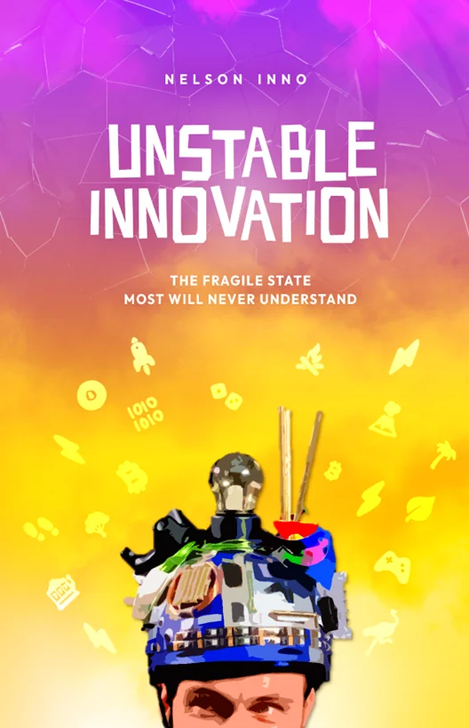
Unstable Innovation
A philosophy book disguised as an innovation and entrepreneurship book. Now read by 2,000+ innovators across the world.
By Nelson Inno · This book Buy or get freeThree books by Nelson Inno and the fifteen books he and Adam Nili recommend most — covering philosophy, history, megatrends, workshops, negotiation, the modern monetary system, and Bitcoin.

A philosophy book disguised as an innovation and entrepreneurship book. Now read by 2,000+ innovators across the world.
By Nelson Inno · This book Buy or get free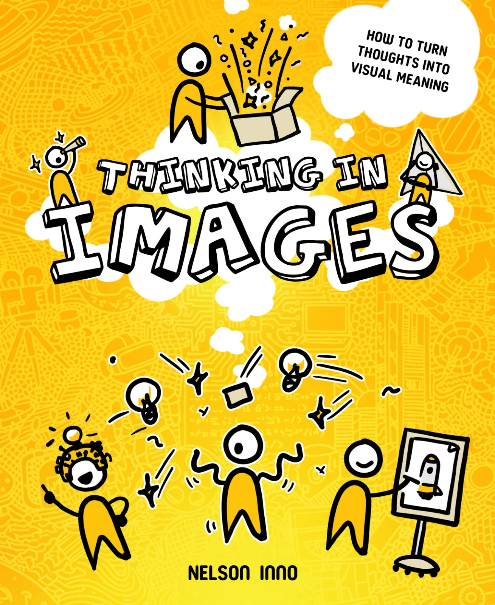
A framework for translating complex ideas into visual communication. Built on Feynman's method and seven years of visual-first pedagogy.
By Nelson Inno · Coming 2026 Learn more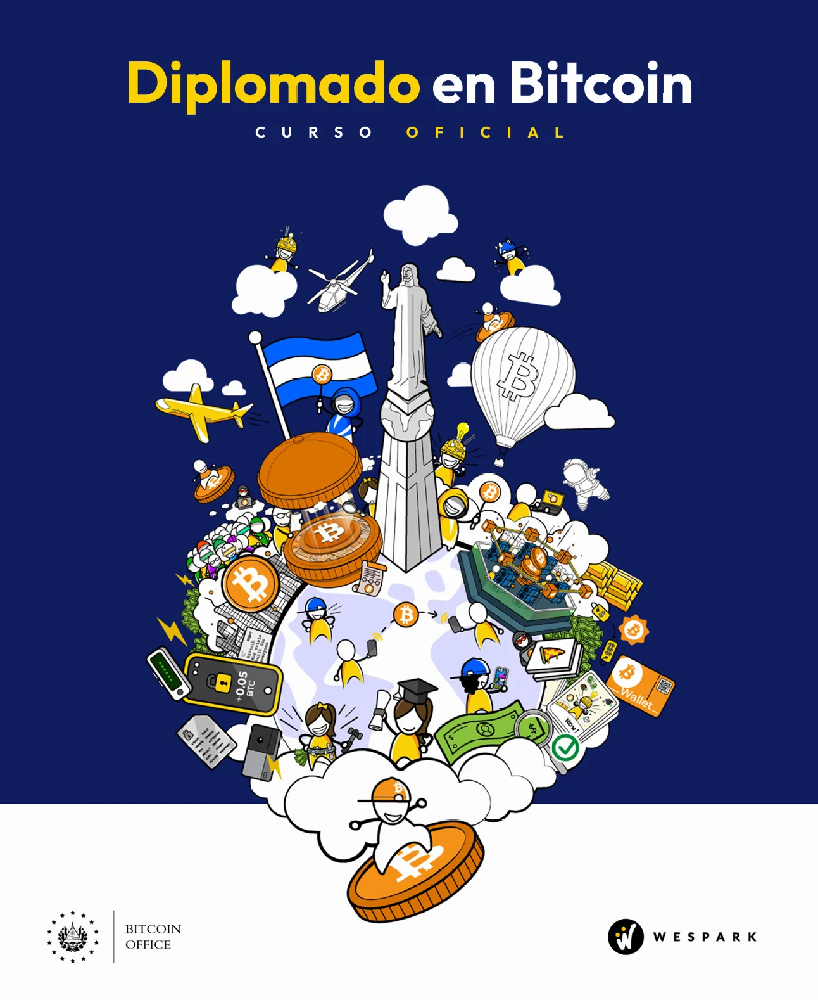
El Salvador's official national Bitcoin curriculum. Co-designed by WeSpark with the National Bitcoin Office, published with the Ministry of Education.
Published by WeSpark Learn moreAdam Nili and Nelson Inno have prepared a short list of 15 of their favorite books. These books cover a range of topics, including philosophy and the way we think, the progress of humankind, social relationships, megatrends and the future, living a good life, designing and executing workshops, negotiation tips, the modern monetary system, and Bitcoin.
This book helps you understand and reach Eudaimonia.
Recommended by Nelson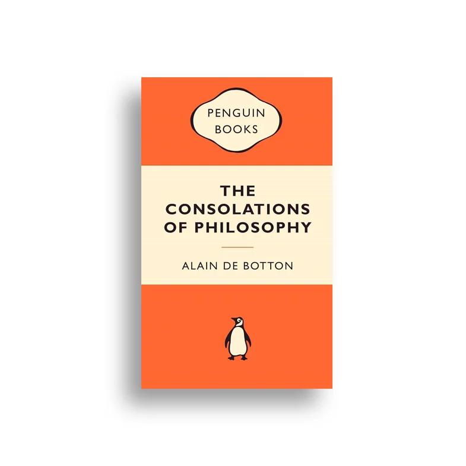
A fine introduction to the world of philosophy.
Recommended by Adam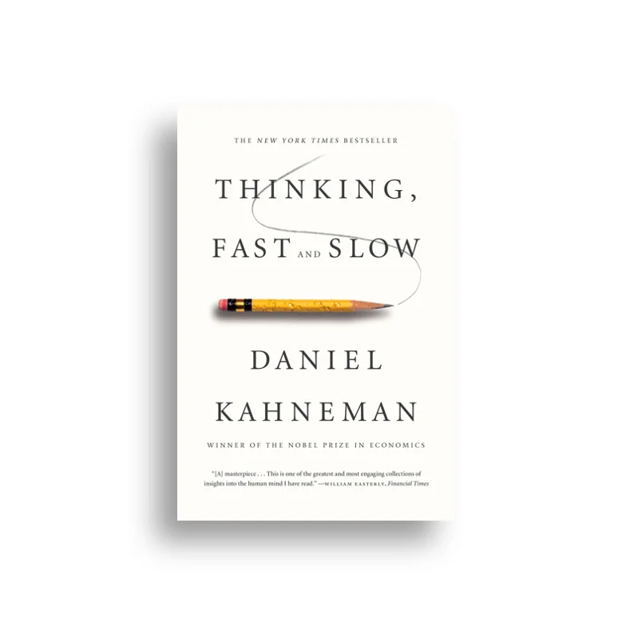
A groundbreaking tour of the mind that explains the two systems that drive the way we think.
Recommended by Nelson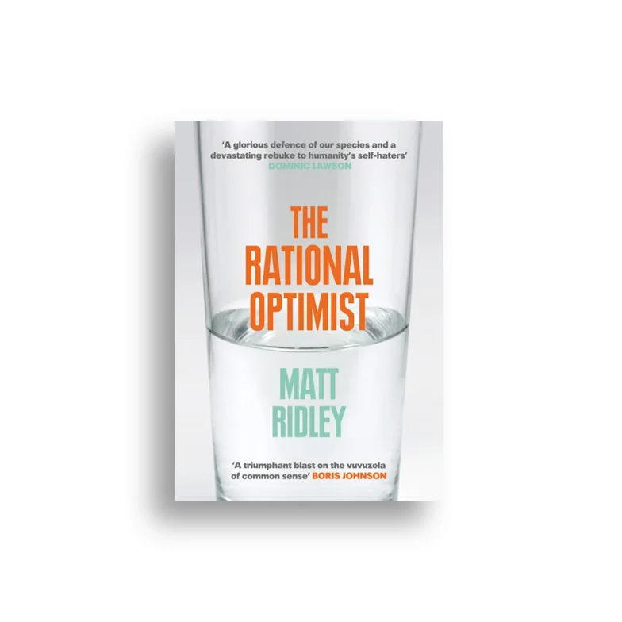
This book focuses on some of the critical issues facing the world today, from a rational and optimist point of view.
Recommended by AdamA summary of the biggest lessons and conclusions from the history of humankind.
Recommended by Adam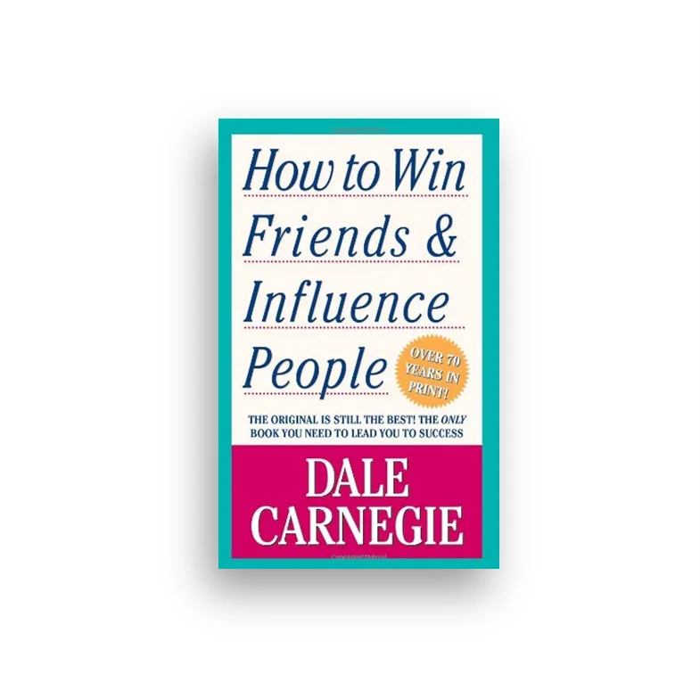
A timeless book that helps you build strong, genuine relationships.
Recommended by Nelson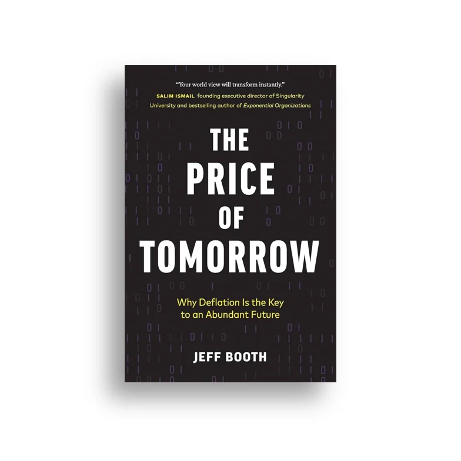
A book about the upcoming technological revolution and a deflationary future.
Recommended by Nelson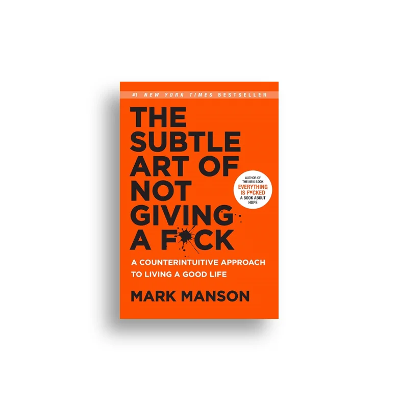
This book helps you filter out anything superficial in your life to be able to focus on what matters.
Recommended by Nelson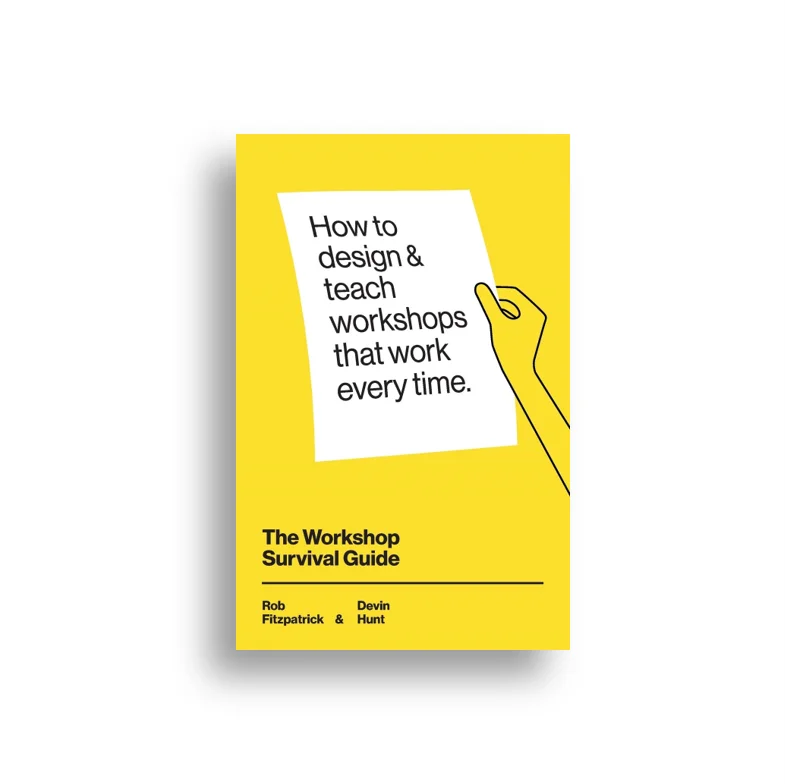
A practical book to learn how to design educational workshops.
Recommended by Nelson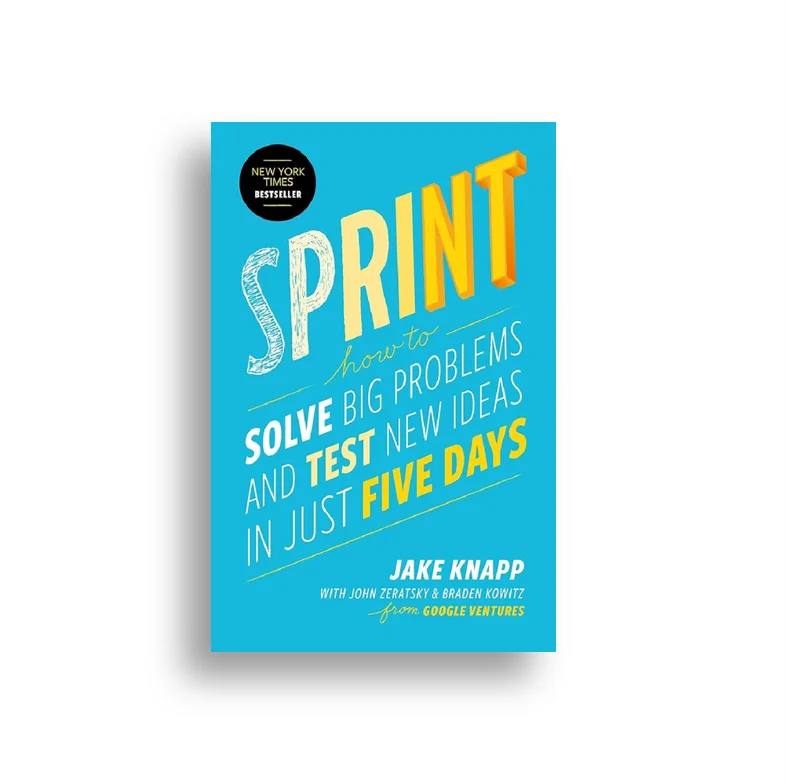
This book describes the most effective workshop framework for solving big problems.
Recommended by NelsonA strong book about pricing and negotiations for creative entrepreneurs.
Recommended by Nelson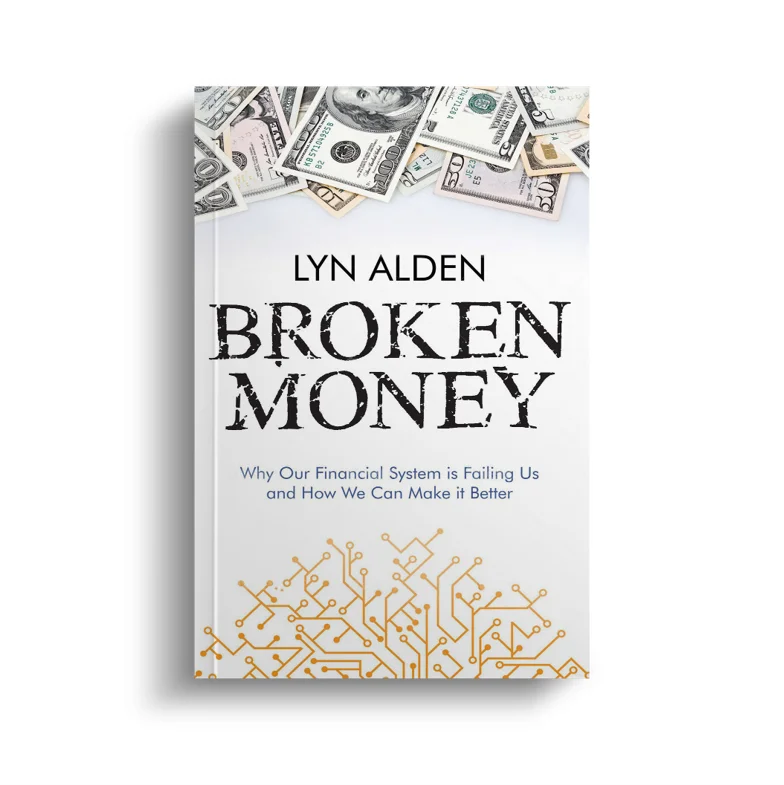
This book dissects and explains the complex monetary system in an extremely simple way.
Recommended by NelsonThe fastest way to get introduced to Bitcoin from the perspective of human rights activists.
Recommended by NelsonA book describing the problems of traditional finance and why a Bitcoin Standard is imperative.
Recommended by Nelson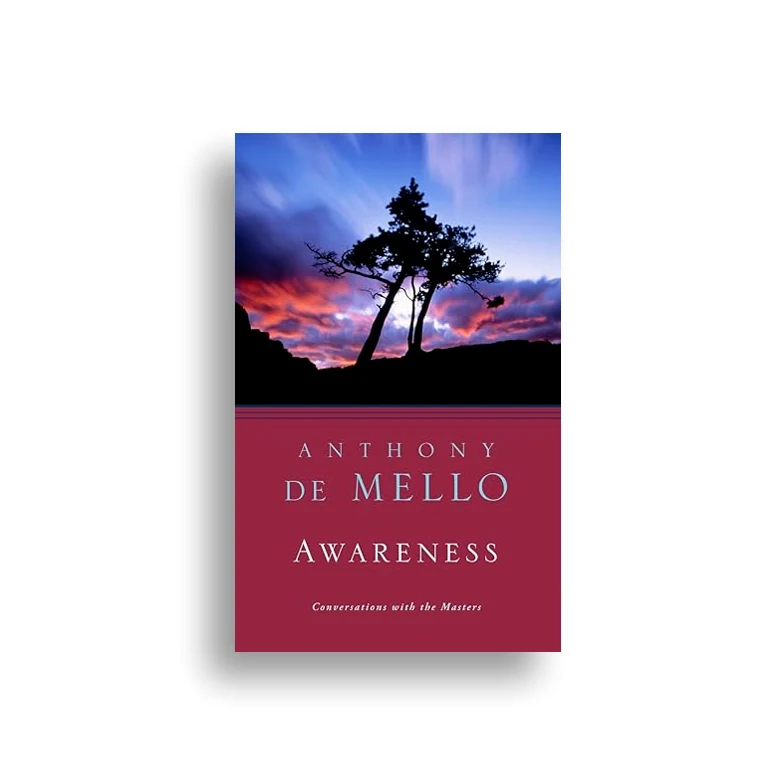
A spiritual classic on waking up, dropping illusions, and seeing reality as it truly is.
Recommended by AdamNo affiliate links here — Nelson doesn't believe in making money off the people who came